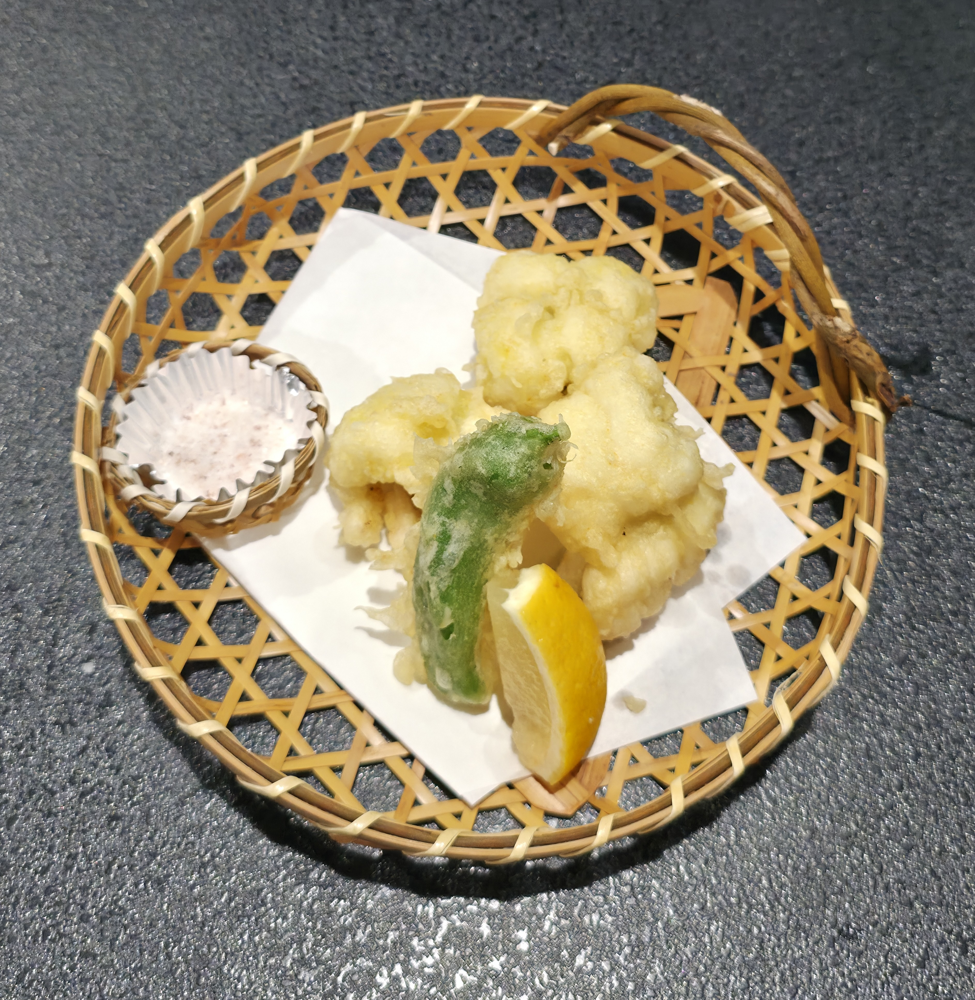
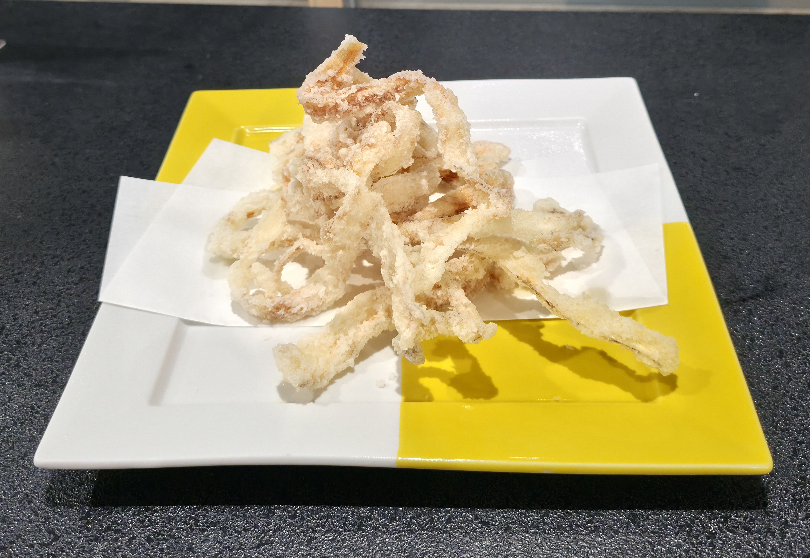
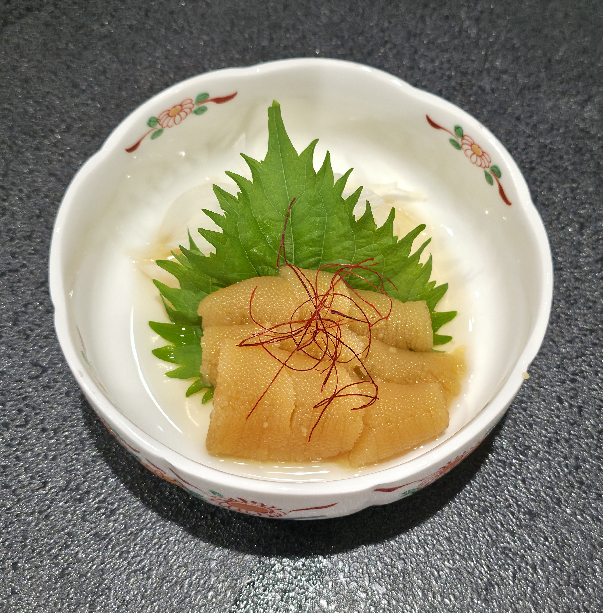

キスの天ぷら
天ぷらふっくら軽い白身を、薄衣でさくっと。レモンと塩で香りよく楽しめます。
ふっくら軽い白身を、薄衣でさくっと。レモンと塩で香りよく楽しめます。

淡白な旨みをふんわり揚げた季節の味。まずは塩でどうぞ。

香ばしいごぼうの歯ざわりが心地よい、酒の肴にも合う一皿です。

涼しげなハモに、まろやかな酢味噌を添えて。夏らしい爽やかな味わい。

ぷちぷちとした食感とだしの旨み。最初の一品にも、締め前の肴にも。
価格・入荷状況は季節や仕入れにより変わる場合があります。店内スタッフまでお声がけください。